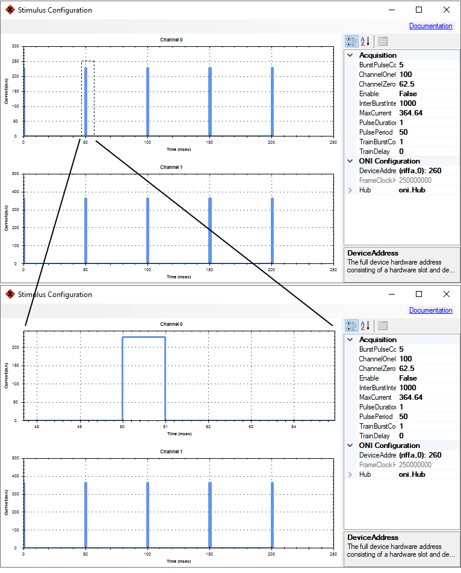
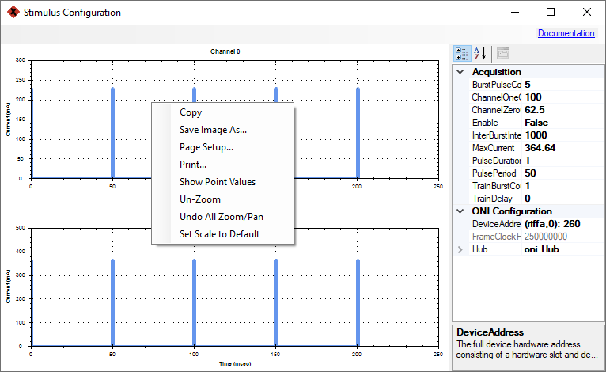

OpticalStimulationDevice#
A Bonsai sink that wraps a dual-channel HS64 Optical Stimulator device.
- Input:
A
booleanthat triggers stimulus deliveryTrue: deliver stimulus
False: Do nothing


Configuration#
Configuration is performed using either the property pane or a configuration GUI which provides a graphical representation of the stimulus waveform.
Example stimulus waveform with parameter definitions.#
Property Pane#
Parameters available through the property pane are as follows:
Name |
Type |
Description |
|---|---|---|
Enable |
boolean |
Enable or disable the stimulator. If the stimulator is disabled, it will not respond to trigger inputs. This setting is useful if you wish to interleave electrical and optical stimuli, since they share a trigger line on some headstages. |
MaxCurrent |
double |
Maximum current per channel per pulse (mA). This value is used by both channels. To get different amplitudes for each channel use the Channel0Level and Channel1Level parameters. |
ChannelZeroCurrent |
double |
Channel 0 percent of max current. If greater than 0, channel 0 will respond to triggers. |
ChannelOneCurrent |
double |
Channel 1 percent of max current. If greater than 0, channel 1 will respond to triggers. |
PulseDuration |
double |
Pulse duration (msec). |
PulsePeriod |
double |
Pulse period (msec). |
BurstPulseCount |
unit |
Number of pulses to deliver in a burst. |
InterBurstInterval |
double |
Interburst interval (msec). |
TrainBurstCount |
uint |
Number of bursts to deliver in a train. |
TrainDelay |
double |
Delay between issue of trigger and start of train (msec). |
Configuration GUI#
The configuration GUI is identical to the property pane, but provides a plot of the stimulus waveform.
The OpticalStimulationDevice configuration GUI#
GUI Controls#
Mouse action |
Function |
|---|---|
Left click + drag |
Zoom selection  |
Middle click + drag |
Pan |
Right click |
Open waveform plot context menu  |
Scroll forward |
Zoom in |
Scroll backward |
Zoom out |